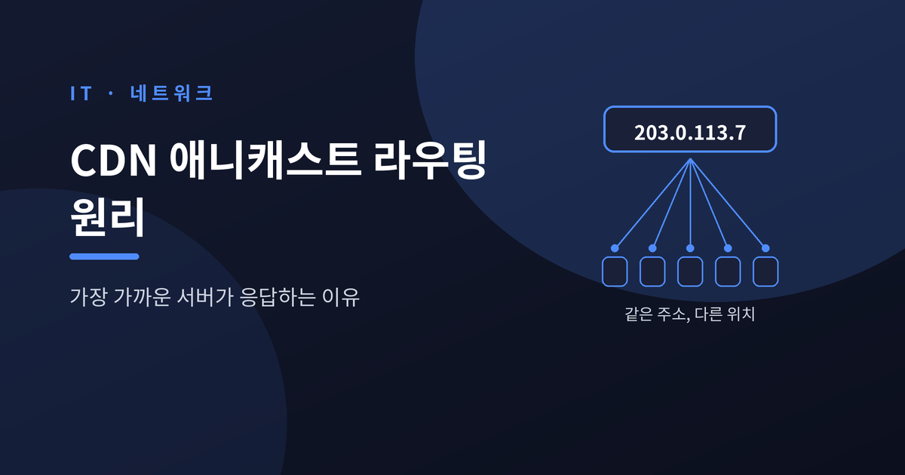
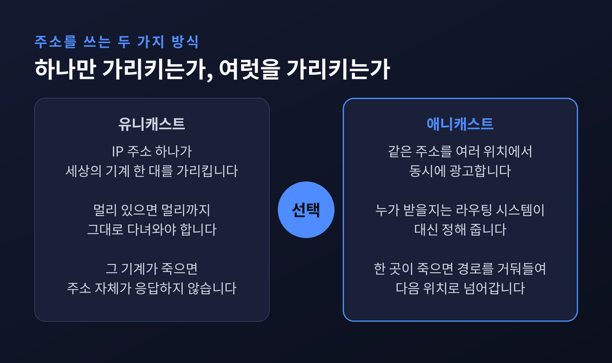
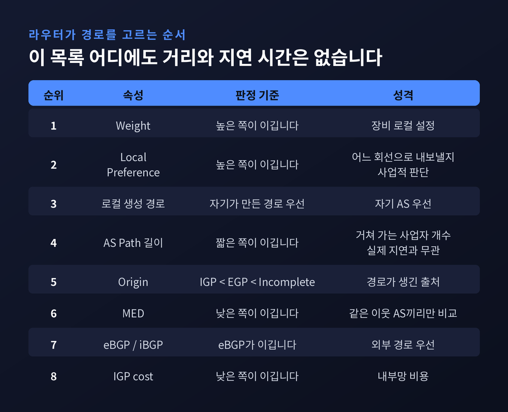
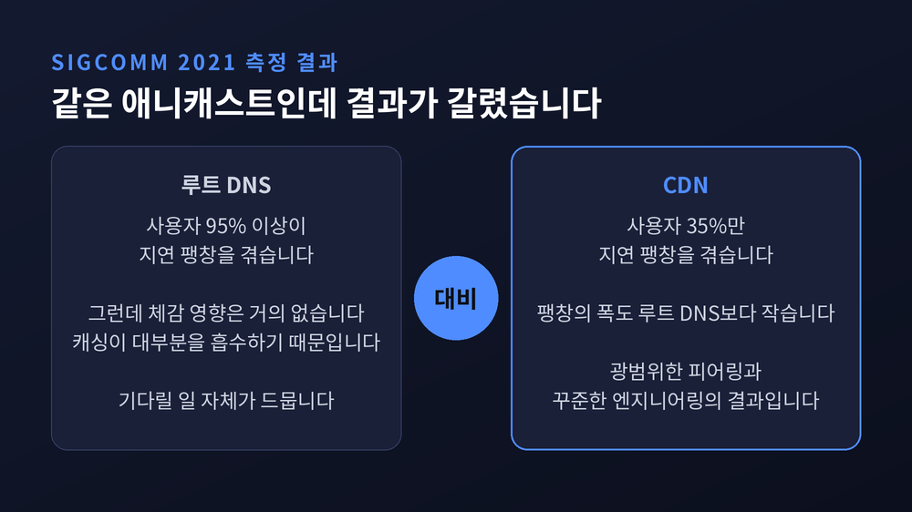
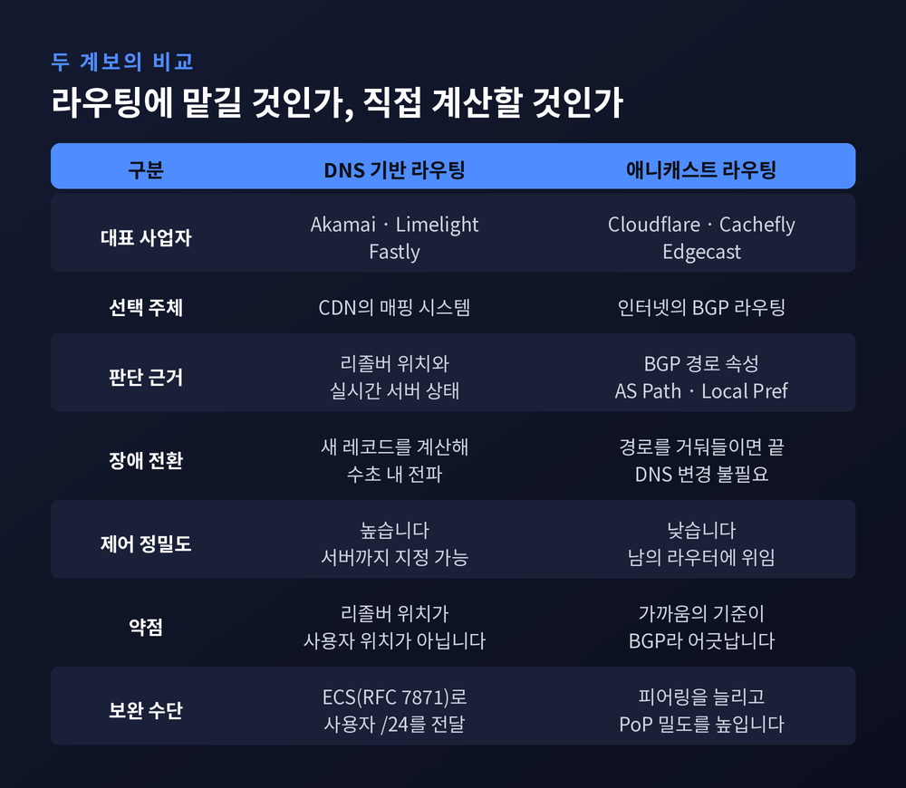
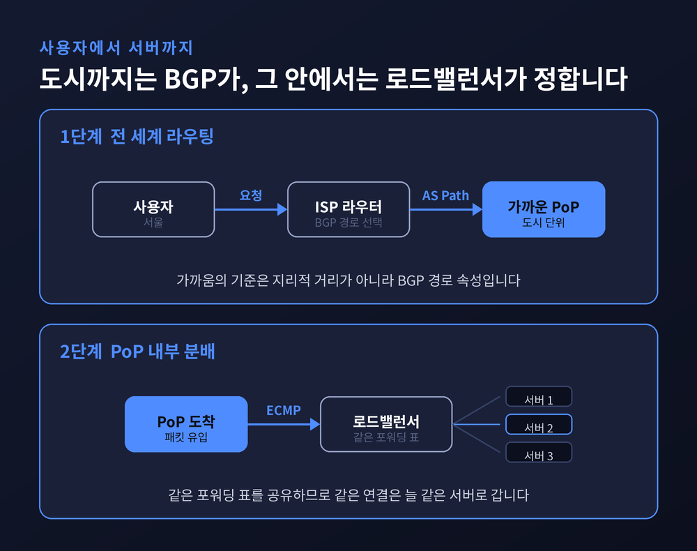
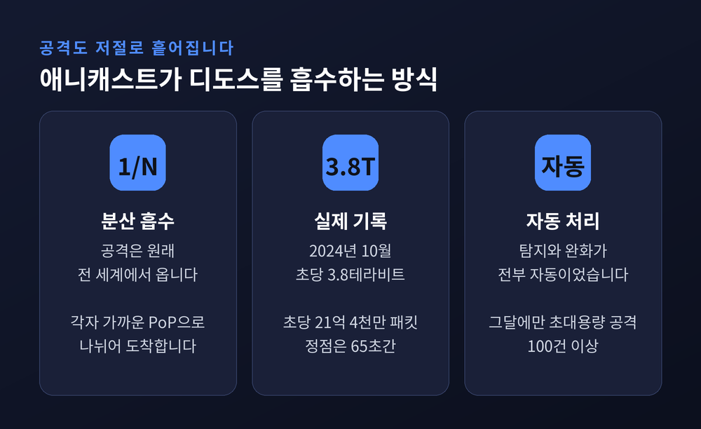

CDN 애니캐스트 라우팅 원리 — 가장 가까운 서버가 응답하는 이유
이번 글에서는 CDN이 전 세계 사용자를 어떻게 가까운 서버에 붙이는지 정리해 보겠습니다. 서울에서 누른 주소와 상파울루에서 누른 주소가 똑같은데 응답은 다른 기계에서 오는 구조, 그 한가운데에 애니캐스트 라우팅이 있습니다.

세 줄 요약
- 애니캐스트는 하나의 서비스 IP를 여러 독립된 위치에서 동시에 BGP로 광고하는 방식입니다. 어느 서버가 받을지는 클라이언트가 아니라 인터넷의 라우팅 시스템이 대신 정합니다.
- 여기서 말하는 "가장 가까운"은 지리적 거리가 아니라 BGP 경로 속성 기준의 가까움입니다. 그래서 콜로라도 사용자가 프랑스 쪽으로 넘어가는 일도 벌어집니다.
- 그럼에도 CDN에서는 충분히 잘 작동합니다. 2021년 SIGCOMM 연구에서 루트 DNS는 사용자 95% 이상이 지연 팽창을 겪었지만, CDN은 35%에 그쳤습니다.
주소 하나를 수백 곳에서 동시에 외칩니다
보통의 IP 주소는 세상에 단 한 대의 기계를 가리킵니다.
애니캐스트는 그 약속을 깹니다.
IETF 표준 문서 RFC 4786은 애니캐스트를 이렇게 정의합니다.
하나의 서비스 주소를 여러 개의 분리되고 자율적인 위치에서 사용 가능하게 만들어, 그 주소로 보낸 패킷이 여러 위치 중 한 곳으로 라우팅되게 하는 것.
절차는 두 단계뿐입니다.
먼저 서비스를 안정적인 IP 주소 집합에 묶습니다.
그다음 그 주소에 대한 도달 가능성을 여러 독립적인 노드에서 라우팅 시스템에 광고합니다.
여기서 가장 중요한 문장이 나옵니다.
노드 선택 결정을 클라이언트가 아니라 라우팅 시스템이 대신 내린다는 것입니다.
사용자는 자기가 어느 기계와 대화하는지 모릅니다. 알 필요도 없습니다.
규모가 얼마나 되는지 보면 감이 잡힙니다.
우리가 "13개"라고 배우는 DNS 루트 서버는 실제로 13대가 아닙니다.
root-servers.org 기준 2026년 9월 18일 현재 12개 운영기관이 2,045개의 인스턴스를 돌리고 있습니다.
같은 해 5월 말에는 2,015개였으니 지금도 늘어나는 중입니다.
이름은 13개, 장비는 2천 개가 넘습니다.
그 간극을 메우는 기술이 애니캐스트입니다.

"가장 가까운"은 지리가 아니라 BGP의 셈법입니다
CDN 사업자는 자기 IP 대역을 모든 데이터센터에서 똑같이 광고합니다.
사용자의 통신사 라우터는 여러 곳에서 온 광고를 받아 그중 하나를 고릅니다.
그 고르는 순서가 BGP 최적 경로 선택 알고리즘입니다.
| 순위 | 속성 | 판정 |
|---|---|---|
| 1 | Weight | 높은 쪽 (벤더 로컬) |
| 2 | Local Preference | 높은 쪽 |
| 3 | 로컬 생성 경로 | 자기 것 우선 |
| 4 | AS Path 길이 | 짧은 쪽 |
| 5 | Origin | IGP < EGP < Incomplete |
| 6 | MED | 낮은 쪽 |
| 7 | eBGP / iBGP | eBGP 우선 |
| 8 | IGP cost | 낮은 쪽 |
목록을 위에서 아래로 훑어보시면 한 가지가 눈에 걸립니다.
왕복 지연 시간도, 물리적 거리도 어디에도 없습니다.
Local Preference는 "어느 회선으로 내보낼 것인가"라는 사업적 판단입니다.
AS Path 길이는 거쳐 가는 사업자의 개수일 뿐, 그 구간이 실제로 얼마나 걸리는지는 말해 주지 않습니다.
AS 하나를 건너뛰는 해저 케이블이 AS 셋을 거치는 국내 회선보다 느릴 수 있습니다.
그래서 어긋납니다.
애니캐스트 라우팅 관련 특허 문헌에 나오는 예시가 선명합니다.
미국 콜로라도의 사용자가 프랑스에 있는 네트워크로 넘어가 멀리 있는 노드에서 콘텐츠를 받는 경우입니다.
더 가까운 노드가 분명히 있는데도 그렇습니다.
이유는 기술이 아니라 돈입니다.
AS 사이의 경로는 최단 거리가 아니라 사업 규칙으로 결정되는 경우가 많습니다.
어떤 사업자끼리는 무료로 트래픽을 주고받고, 어떤 사업자는 유입·유출에 요금을 매깁니다.
"요청을 가능한 한 빨리 남의 AS로 넘긴다"는 규칙 하나가 대륙을 하나 건너뛰게 만듭니다.

그래서 실제로 얼마나 어긋날까요
다행히 이건 측정된 영역입니다.
2015년 IMC 학회에 발표된 Calder 등의 연구 "Analyzing the Performance of an Anycast CDN"은 Bing 검색 서비스의 수백만 건 클라이언트 측정을 사용했습니다.
결과는 애니캐스트가 클라이언트의 약 20%를 최적이 아닌 프론트엔드로 보낸다는 것이었습니다.
다만 논문의 결론은 비관적이지 않았습니다.
정밀한 제어 수단이 없음에도 애니캐스트는 대체로 잘 동작한다는 쪽이었고, 어긋난 클라이언트는 단순한 이력 기반 예측으로 보정할 수 있다고 덧붙였습니다.
더 흥미로운 연구는 2021년 SIGCOMM에 실린 "Anycast in Context: A Tale of Two Systems"입니다.
이 논문은 루트 DNS와 CDN을 따로 떼어 놓고 비교했습니다.
| 구분 | 지연 팽창을 겪는 사용자 | 체감 영향 |
|---|---|---|
| 루트 DNS | 95% 이상 | 거의 없음 (캐싱이 흡수) |
| CDN | 35% | 팽창 폭도 더 작음 |
숫자의 대비가 큽니다.
루트 DNS에서는 거의 모든 사용자가 최적보다 먼 곳으로 갑니다.
그런데 루트 DNS 응답은 캐싱이 워낙 잘 들어서 사용자가 그 지연을 기다릴 일이 거의 없습니다.
반면 CDN은 팽창을 겪는 사용자가 3분의 1에 그치고, 폭도 작습니다. 광범위한 피어링과 꾸준한 엔지니어링의 결과입니다.
논문이 남긴 지적이 뼈아픕니다.
"애니캐스트는 비효율적"이라는 오랜 통념은 단일 애플리케이션 실험을 일반화한 것이며, 애니캐스트 자체의 기술적 잠재력을 보여주지 못한다는 것입니다.

다른 길 — 라우팅 대신 DNS에게 묻는 방식
모든 CDN이 애니캐스트를 쓰는 것은 아닙니다.
계보가 둘로 갈립니다.
Cloudflare, Cachefly, Edgecast는 애니캐스트 쪽입니다.
Akamai, Limelight, Fastly는 DNS 기반 라우팅 쪽입니다.
DNS 기반 방식은 선택권을 라우팅 시스템에 넘기지 않습니다.
CDN이 직접 매핑 시스템을 돌려서, 질의가 들어오면 어느 서버를 쓸지 계산해 답을 내려보냅니다.
Akamai 자료에 따르면 서버나 네트워크 상태가 나빠지면 새 DNS 레코드를 계산해 수초 안에 리졸버로 전파합니다.
제어는 훨씬 정밀합니다.
하지만 이 방식에는 구조적 약점이 하나 있습니다.
권한 네임서버는 사용자의 IP를 보지 못합니다.
보이는 것은 사용자를 대신해 질의한 리졸버의 IP뿐입니다.
공용 DNS를 쓰는 사용자라면 그 리졸버가 엉뚱한 나라에 있을 수도 있습니다.
이 문제를 메우려고 나온 것이 EDNS Client Subnet, 줄여서 ECS입니다.
2016년 RFC 7871로 정리됐습니다.
재귀 리졸버가 사용자 IP의 잘린 앞부분(통상 IPv4는 /24, IPv6는 /56)을 질의에 덧붙여 보내는 방식입니다.
대가도 있습니다.
답변이 수많은 서브넷별로 맞춤 생성되니 캐시가 잘게 쪼개집니다.
실측에서 캐시 적중률이 크게 떨어지는 사례가 확인됩니다.
정확도를 사면 캐시 효율을 내놓는 거래입니다.
요즘은 둘을 섞기도 합니다.
Akamai 특허 문헌에는 사용자를 먼저 가까운 애니캐스트 포워딩 리전으로 보내고, 그 리전에서 DNS 매핑 시스템을 조회해 실제 엣지 IP를 정하는 하이브리드 구조가 기술돼 있습니다.

PoP에 도착한 뒤에도 한 번 더 갈라집니다
BGP는 사용자를 도시 단위까지만 데려다줍니다.
그 안에서 수십, 수백 대 중 어느 기계가 받을지는 완전히 다른 문제입니다.
평상시에는 간단합니다.
데이터센터 스위치가 출발지·목적지 IP와 포트, 프로토콜을 묶은 5-튜플을 해싱해 나눕니다.
같은 연결은 늘 같은 서버로 갑니다.
문제는 장애와 증설 때 터집니다.
대부분의 하드웨어 구현은 해시 버킷을 쓰는데, 서버 대수가 바뀌면 버킷이 통째로 재배정됩니다.
그 순간 상당수 트래픽이 자기 연결을 전혀 모르는 서버 앞에 도착합니다.
현대 구현은 일관된 해싱으로 이를 피합니다.
멀쩡한 넥스트홉의 버킷은 건드리지 않고, 죽은 것만 옮깁니다.
진짜 어려운 쪽은 서버를 새로 넣을 때입니다.
기존 서버들에서 버킷을 조금씩 빼앗아 새 서버에 줘야 하는데, 무언가를 끊지 않고 해내기가 지독히 까다롭습니다.
버킷이 한가해 보인다고 안전한 것도 아닙니다. 유휴 버킷이 곧 활성 TCP 세션이 없다는 뜻은 아니니까요.
덤으로 ICMP 문제도 붙습니다.
ICMP 응답에는 원래의 포트 번호가 들어 있지만 하드웨어 스위치는 그만큼 깊이 들여다보지 못합니다.
결국 엉뚱한 서버로 가고, 경로 MTU 탐색이 깨집니다.
그래서 큰 사업자들은 전용 소프트웨어 로드밸런서를 만들어 씁니다.
구글의 Maglev, 메타의 Katran, Cloudflare의 Unimog가 그것입니다.
Unimog는 컨트롤 플레인이 만든 포워딩 테이블을 데이터센터 안 모든 로드밸런서에 뿌립니다.
모두가 같은 표를 보고 있으니, 라우터가 어느 패킷을 어디로 던지든 결론이 같아집니다.
ECMP 재해싱이 문제가 되지 않는 이유가 여기 있습니다.

덤으로 따라오는 방패
애니캐스트를 쓰면 공격 방어가 같이 따라옵니다.
디도스 트래픽은 원래 전 세계에 흩어진 감염 기기에서 옵니다.
애니캐스트 아래에서는 그 공격도 각자 가까운 PoP으로 흩어집니다.
막으려고 모으는 게 아니라, 구조상 저절로 나뉩니다.
수치로 보면 이렇습니다.
1Tbps짜리 공격이 300개 지점으로 퍼지면 각 지점이 감당할 몫은 그 일부뿐입니다.
실제 기록도 있습니다.
2024년 10월, Cloudflare는 초당 3.8테라비트, 초당 21억 4천만 패킷 규모의 공격을 막아냈습니다.
당시 공개된 것 중 최대 규모였고, 정점은 65초간 이어졌습니다.
탐지와 완화는 전부 자동으로 처리됐습니다.
그달에만 비슷한 규모의 초대용량 공격이 100건 넘게 있었습니다.
Cloudflare는 348개 도시에 데이터센터를 두고 13,000개가 넘는 네트워크와 직접 상호접속하고 있습니다.
그 결과 전 세계 인터넷 사용 인구의 95%가 50밀리초 이내에 들어옵니다.
결국 지연을 줄이는 가장 확실한 방법은 영리한 알고리즘이 아니라 더 촘촘한 물리적 밀도였습니다.

한계도 분명합니다
좋은 점만 적는 것은 정직하지 않습니다.
첫째, 통제권이 없습니다.
경로를 정하는 것은 CDN이 아니라 남의 라우터입니다.
특정 사용자 집단을 특정 PoP으로 보내고 싶어도 직접 지정할 방법이 없습니다.
할 수 있는 일은 광고를 조절해 간접적으로 유도하는 정도입니다.
둘째, 전환이 즉각적이지 않습니다.
2024년 ANRW에 발표된 실측 연구에 따르면 인터넷의 80%는 약 10초 안에 수렴합니다.
문제는 나머지입니다. 갱신이 느린 네트워크들의 긴 꼬리가 남습니다.
시뮬레이션 환경에서는 기본 hold-timer 180초 설정에서 평균 163.2초까지 측정된 사례도 있습니다.
셋째, RFC 4786이 처음부터 경고한 대목입니다.
하나의 트랜잭션은 같은 서버와 끝까지 이뤄져야 하는데, 라우팅 결정이 그 시간보다 오래 안정적이어야 한다는 조건이 붙습니다.
예전에는 이 조건 때문에 TCP 서비스에 애니캐스트를 쓸 수 없다는 말이 정설이었습니다.
지금은 다르게 봅니다. 인터넷 어딘가에서 서로 다른 두 사이트로 가는 동일 비용 경로가 생기는 상황 자체가 거의 없기 때문입니다.
오래된 통념이 실측에 밀려난 쪽에 가깝습니다.
정리하면 이렇습니다.
애니캐스트는 사용자를 가장 가까운 서버로 보내는 기술이 아닙니다.
"어디로 보낼지 정하는 일을, 이미 그 일을 하고 있는 인터넷에게 맡기는 것"에 가깝습니다.
그래서 20%에서 35%쯤은 어긋납니다.
대신 DNS를 만지지 않아도 장애가 우회되고, 공격이 저절로 흩어지고, 새 도시를 열면 그 도시가 곧바로 응답합니다.
어긋남을 감수하고 단순함을 사는 거래입니다.
다음에 해외 사이트가 이상하리만치 빠르게 열리는 순간을 만나신다면, 그 뒤에 수백 개 라우터의 조용한 합의가 있었다는 점을 떠올려 보시면 좋겠습니다.